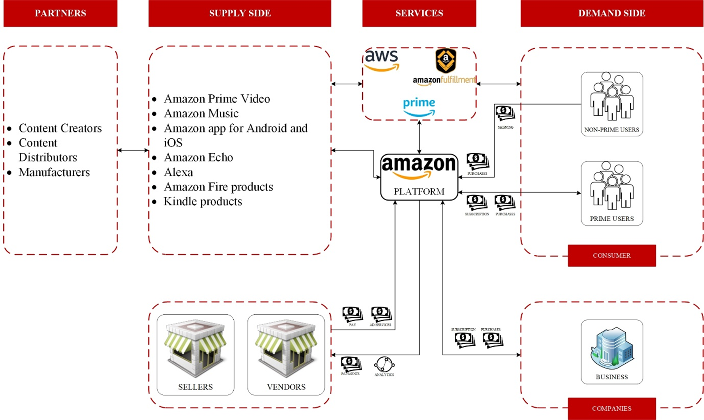
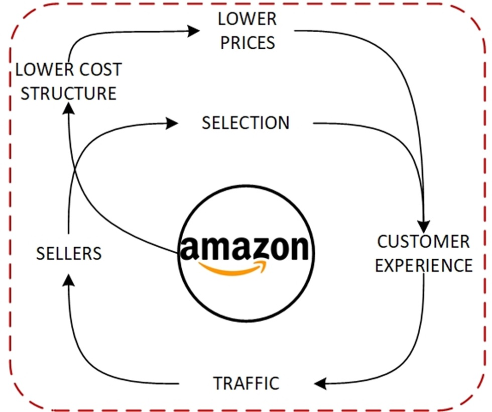
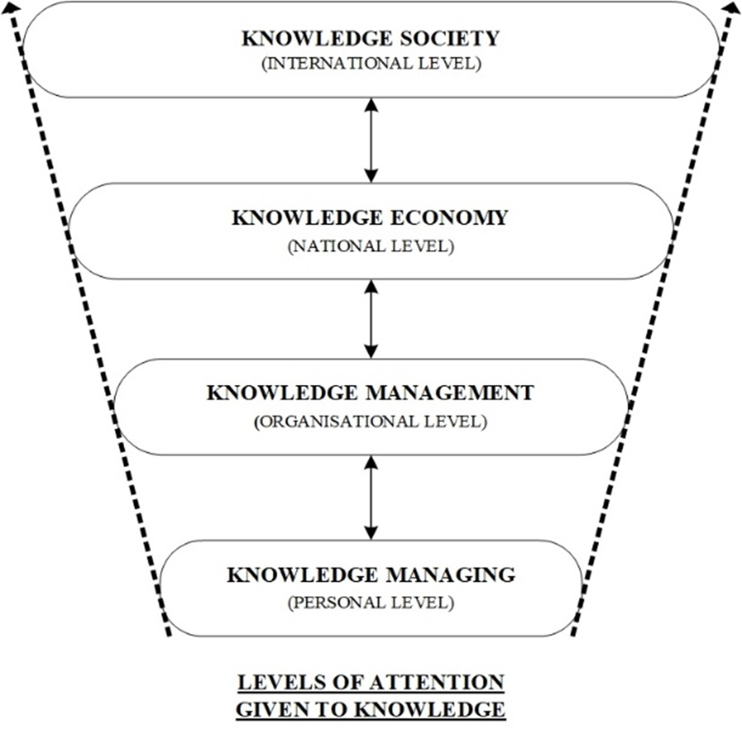
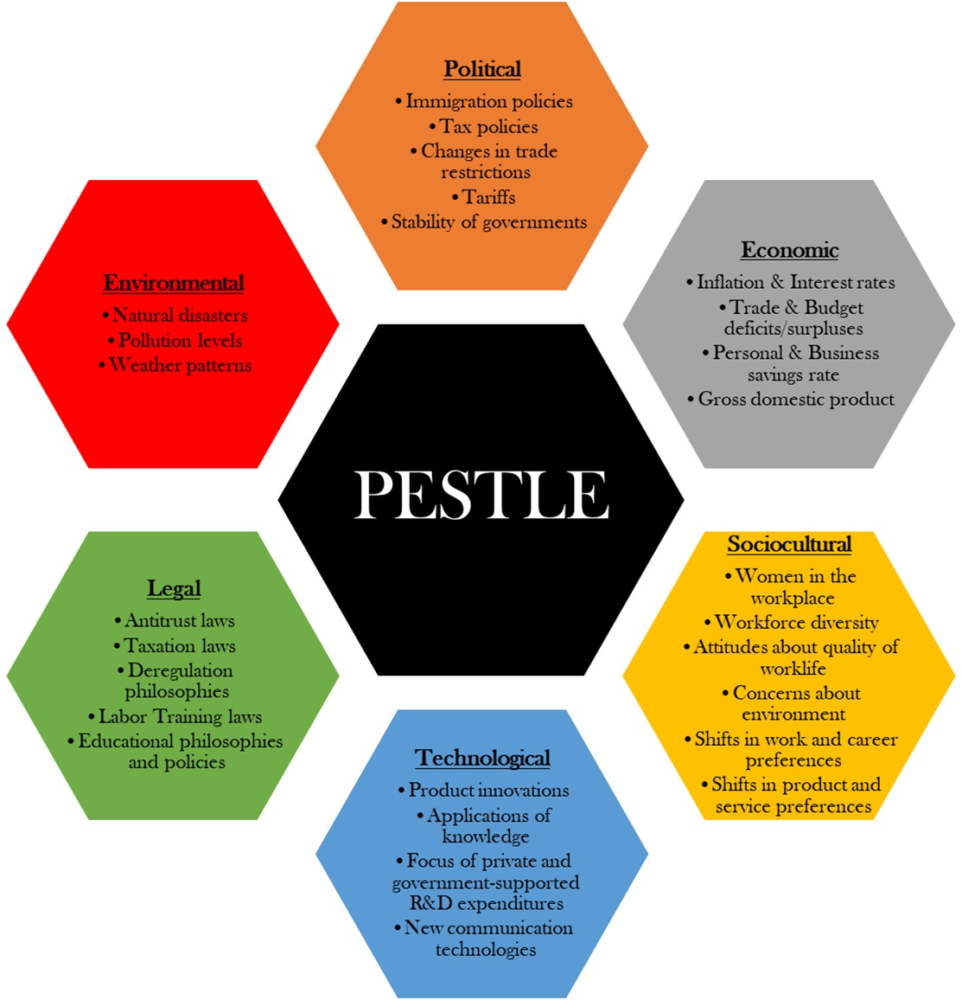

Amazon.com Inc. was created and founded in 1994 as an online retailer for selling books. Although this
was the primary function, Amazon’s founder, Jeff Bezos, had maintained that the company was a
technology aimed at simplifying the online transaction process for customers. Over the years, Amazon has
grown into a conglomerate with businesses ranging from subscription-based services that offer video and
audio streaming content, to advertising service, to cloud computing where they are a market leader. An
analysis was done on the company’s business model and the socioeconomic trends that could affect
said model. It was seen that Amazon had an overwhelming positive effect on the US and UK economies
through their tax contributions, ability to create jobs through their investments, and commitment to
net-zero carbon emissions by 2040. The knowledge economy is defined, explained and analysed on how it is
applied at Amazon and understanding how it fits the disruptive brand through its investment into 8 out
of the 12 disruptive technologies. Furthermore, the macroeconomic dimensions that are influenced by
Amazon are explored, as well as the key demographic and socioeconomic shifts. The key drivers of change
are identified and the reasoning behind the influence on Amazon and vice versa is explained and
analysed. Political factors influencing Amazon’s economic growth and development are analysed and
the implications of the sharing economy is defined and Amazon’s response to it, Amazon Flex, is
identified and explained. Antitrust laws and the legal systems are identified and analysed with focus on
how Amazon lobbies antitrust laws and other issues, and how they manage to use their business model and
strategy to remain aggressive. Lastly, recommendations are given on how to adhere and lessen the impact
of the antitrust lawsuits, while identifying a potential new subsidiary for the company to remain
disruptive in the industry.
1. Introduction
Amazon.com Inc., commonly referred to and henceforth referred to as Amazon, is the world’s largest
e-commerce and online retailer which has extended its business offerings over the years adapting to new
and upcoming technologies and trends. In 1994, a former Wall Street hedge fund executive, Jeff Bezos,
had created and incorporated Amazon as an online retailer for selling any book, to any reader, anywhere.
The name of the company was synonymous with the Amazon river given its size and dominance in South
America, as well as beginning with the first letter of the alphabet (Hall, 2020). As the logo of the
company evolved, the arrow moving from the “A” of Amazon to the “z” is symbolic
of finding everything from “a to z” on the online store.
Although created as an online book retailer, Jeff Bezos had maintained that the company is a technology
company aimed at making the process of online transactions for consumers a simpler process (Hall, 2020).
By making the customer the focus of the business and its operations, Amazon’s mission and vision
statements extend further than the company’s beginnings as an online retailer. The inclusion of
the company’s subsidiaries and offerings have taken Amazon from an extensive e-commerce platform
to a company that offers subscription-based services such as streaming services for both music and
videos through Amazon Prime, e-books and audio books as well premium perks with its online store. In
addition to this, Amazon’s cloud computing offering of Amazon Web Services (AWS) has made the
company an industry leader by offering services of computational ability, storage, database and various
services through the cloud itself. Over and above the cloud computing and subscription services, Amazon
generates income through advertising services that it provides on its platform which are catered to
users in the form of personalised advertisements (Amazon.com, Inc., 2021).
Throughout history and even presently, Amazon is seen as a constant disruptor in the industry, such that
any companies that cause a disruption to the digital marketplace and e-commerce industry is known to be
having “the Amazon Effect” (Mitchell, 2021). Amazon had initially disrupted the book
industry forcing the likes of brick-and-mortar stores to adapt their business models as well. As
technology advanced and Amazon’s business model with it, other industries were affected by the
disruption caused by Amazon, with most recently brick-and-mortar grocery stores with their own grocery
stores, Amazon Go, utilising the latest technology and making the shopping experience more efficient and
enjoyable (Furth, 2018).
1.1. Amazon's Business Model

Fig.1 - High-Level, Simplified View of Amazon's Business Model adapted from
(Fox, 2020)
Figure 1 presents a simplified version of Amazon’s Business Model, and as the business has evolved
and adapted their business and offerings so has their various streams of revenue adapted and evolved
(Fox, 2020). Currently, Amazon’s revenue streams are as follows:
Amazon Marketplace
Amazon Books
Amazon Music and Videos
Amazon Gaming
Amazon Web Services
Amazon Fire Products
Amazon Prime
Amazon Tickets
Amazon Patents
Amazon Advertising (Fox, 2020).
The Amazon Marketplace represents the sellers and the customers of the company, being the core competency
and main focus of its revenue. This further extends to the various books offered both as physical or
digital copies tying back to the business’s inception and offering. The music and videos as well
as gaming links with Amazon’s subscription service of Prime providing customers with services from
the streaming platform twitch.tv as well as the Amazon Prime platform itself similar to that of
their competitor, Netflix. The Amazon Fire products are those trademarked products of Amazon that
provide their consumers with various technological products from operating systems, tablets and smart
phones. The patents owned by Amazon allow companies to license them and utilise them within their
industry and rights, whereas the advertising stream offers clients be it sellers or businesses to
advertise on the platform itself (Fox, 2020).
The Amazon business model has a technological backbone with minimal capital and human capital intensity
which results in the model being scalable. Regardless of Amazon shipping anywhere in the world, should
the company find the need to enter a new country and begin selling products, it can do so without much
difficulty. However, Amazon’s competitors are ever present and constantly growing, but due to the
company’s presence in the industry, it has no fear of competitors as its strategy is more
aggressive rather than defensive, looking to acquire more businesses and their respective customers
(Juneja, n.d.).
Amazon’s vision “to be Earth’s most customer-centric company” is built around
four principles: “customer obsession rather than competitor focus, passion for invention,
commitment to operational excellence, and long-term thinking” (Amazon.com, Inc., 2021).
Amazon’s business model includes the famous Amazon Flywheel, seen in Figure 2, where the
company’s focus being the customer and offering them low prices and turning over their inventory
in a fast manner. With the use of the flywheel, coupled with Amazon’s technology and advancement
in the industry, the company has remained competitive and a market and industry leader with a truly
unique business model that can adapt with the ongoing advancements in technology and changes in the
world and industry.

Fig.2 - Amazon Flywheel Effect adapted from (Fox, 2020)
1.2. Socioeconomic Trends
Social economics, also known as socioeconomic, is a special branch economics and social sciences that
looks at the relationship between the economics and social behaviour. Socioeconomics considers factors
such as the environment, social groups and social classes, how these classes behave within their society
and their surroundings as well as how they handle their finances, while looking at the social impact of
the finances in terms of education, medical care, food and lifestyle (Tarver, 2021).
Amazon’s diverse business model not only opens up the company to more risks, but is impacted by
more socioeconomic trends. Given its international presence and disruption in the industry, some of the
economic trends that affect Amazon and their business model are highlighted in Table 1.
Table 1: Table Detailing the Socioeconomic Trends that Could Affect Amazon
Socioeconomic Trend
Explanation
Healthcare advancements have caused a growth in the world population
· Access to better healthcare in industrialised countries
· Vaccine development, nutritional advancement has reduced mortality in developing
countries
· Less developed regions have seen a larger increase in population growth
(specifically in the working age range)
· More developed regions have seen a steady population growth due to longer
lifespans (Mor Barak & Travis, 2013).
Increase in demand for migrant workers
· With less developed regions spurring a larger population growth, immigration
waves are seen across the globe
· Low birth rates and aging population in developed countries is a main attraction
for working immigrants from developing countries
· New jobs in low economic regions are seen to be increasing (Mor Barak &
Travis, 2013).
Increase of women in the workplace
· With more women being introduced into the labour force, economic, cultural and
social effects have been seen on family life and the workplace environment (Mor Barak
& Travis, 2013).
Increase in racial diversity has called for more equality and inclusion
· Coupled with immigration, companies have seen an increase in minority groups
being employed
· With increase in racial diversity comes religious diversity and respecting the
culture and religious beliefs in the workplace (Mor Barak & Travis, 2013).
Educational attainment and achievement in host countries increase immigration
· The type and quality of education received is a strong determinant of any job
application
· Students are beginning to study abroad in hopes of attaining a degree from a
more internationally recognised institution (Mor Barak & Travis, 2013).
Technological innovation and rapid enhancements in the industry
· COVID-19 pandemic forced the world to rely more on technology to maintain
communication of the typical workplace environment
· Companies had to utilise and train, where necessary, employees on adapting to a
new way of work while employees attempt to achieve the same results
· Remote working is now recognised throughout the world and presents multiple
opportunities to people across the world without the need for immigration (Mor Barak
& Travis, 2013)
· The use of AI and robotics is used in multiple industries making unskilled
labour a thing of the past.
Customer empowerment
· Knowledge is now more readily available to customers at their fingertips
· Making informed decisions on what to purchase in terms of products or services
is seen more often (Haron, 2019).
Monetisation and exchange of personal data
· Personal data such as items purchased, websites visited, locations visited, and
much more personal activity and habits are being logged and tracked
· Personal data is becoming increasingly valuable to companies as it aids in
strategic management and leadership
· The constant data collection and concerns of how it is used is constantly
debated in society with multiple data protection laws being passed (Haron, 2019).
1.3. Effects of Socioeconomic Trends on Amazon's Business Model
Since 2010, Amazon has invested over $350 billion in USA through corporate offices, customer fulfilment,
cloud computing infrastructure, renewable energy farms such solar and wind farms, machinery and
equipment that is eco-friendlier and lastly compensating their employees, which includes increasing the
company’s minimum wage to $15 per hour (Amazon, 2020).
Due to these investments Amazon was able to:
Create over 2.7 million jobs in the USA
Employ more than 800 000 US expatriates across 40 states and 250 countries
Cause a ripple effect of 780 000 jobs being created indirectly in various communities
Allow small to medium businesses to create more than 1.1 million jobs in the USA
Invest $700 million to their employees in an upskilling initiative
Invest in 100 000 electric vehicles for the purpose of deliveries
Aim for net-zero carbon by 2040 with their $100 million investment into their Right Now Climate Fund
(Amazon, 2020).
Over and above the socioeconomic effects seen in USA, Amazon has invested in the UK over £23
billion. Since 2019, Amazon’s UK investment has resulted in:
Amazon employing 30 00 people and creating 10 000 new jobs
Directly and indirectly creating 240 000 jobs
Assisting small to medium businesses by listing approximately 60% of all products from these
businesses
Creating an economy with exporting reaching sales of £2.75 billion
Supporting the UK Government through COVID-19 by:
Delivering 2 million home test kits
Supporting 200 000 businesses through a business accelerator programme
Creating part-time and permanent employment positions
Delivering 800 000 healthy breakfasts to children across the UK(Day One Team, 2020).
2. Literature Review
2.1. Knowledge Economy
The knowledge economy can be defined as knowledge-intensive activities that form the basis of production
and services which contribute to the acceleration of technology and science in conjunction with rapid
obsolescence. The term knowledge economy encompasses a broad lines of research dating back in history
including the rise of science-based industries and the role it played in the socioeconomic change in
1960; to the inclusion of services of other information-rich industries such as publishing and surge of
employment seen in the sector over the last three decades, which has led to the idea of innovation being
sourced from theoretical knowledge; and lastly marking the importance of knowledge in economic growth as
discoveries over time has differed due to no rivalries leading to further innovation (Powell &
Snellman, 2004).
In the modern knowledge economy, there are three main driving forces which are the knowledge, also known
as the intellectual capital; changes, which is the creation of uncertainty and risk by reducing the
level of predictability, i.e. being disruptive in the industry; and globalisation, which is the
unification of finance, production, trade, information and communication technology, scientific research
and competition (Draskovic, et al., 2013). Figure 3 is recreation of levels of knowledge and the amount
of attention that is given to each, and where knowledge management is focused on an organisational
level. Knowledge management is driver behind using an organisation’s existing knowledge and
leveraging it to support the development of new knowledge. The subsequent development of the new
knowledge is what leads to innovation in companies; and aligning innovation and knowledge management is
being seen more and more in organisations around the world. The convergence of these two spaces should
be targeted at real business problems with the benefits being realised throughout the innovation process
itself (APQC, 2021).

Fig.3 - Levels of Attention Given to Knowledge recreated from (Draskovic, et
al., 2013)
The various innovations that will breakthrough in the industry, specifically in the technology industry,
may not always affect the current business and social landscape. However, there are some innovations
will cause the disruption to the industry and current status quo. In 2013, McKinsey Global Institute
reported on various disruptive technologies that would change businesses, life and the global economy.
The 12 technologies identified are estimated to have anywhere between a $14 trillion to $33 trillion a
year impact in 2025 (Manyika, et al., 2013). The 12 disruptive technologies include:
Mobile internet
Automation of knowledge work
Internet of Things
Cloud
Advanced robotics
Autonomous & near-autonomous vehicles
Next-generation genomics
Energy storage
3-D printing
Advanced materials
Advanced oil & gas exploration & recovery
Renewable energy (Manyika, et al., 2013).
Of those 12 technologies, Amazon have publicly invested in eight of the twelve technologies. Mobile
internet saw Amazon put focus on their Kindle e-book reader, specifically the capabilities of the reader
itself, ensuring that it was able to read a more versatile format of e-books. By doing this, Amazon were
able to establish a core competency around its own format and publishing network giving them a huge
competitive advantage. This in turn resulted in Amazon being the market leader in the market, with 60%
of all worldwide sales (Swannell, n.d.).
The automation of knowledge work saw Amazon invest more into the development of AI catered to the
business and services that they offer. This included the marketplace, the streaming services provided
through Prime Video and Amazon Music, even their own custom AI, Alexa, and most recently in their Amazon
Go stores. Amazon had and continuously has successfully leveraged recent technology, such as AI, and
ensure that the company remains competitive in gaining every benefit possible across their business.
Amazon, continued to disrupt the industry by commercialising their AI, built on top of their AWS
service. This commercialisation of AI generates data from the customers, and the various machine
learning models used and ultimately plays into Amazon’s flywheel on how they continuously improve
their customer experience (Swannell, n.d.).
The internet of things technology was instantly utilised at Amazon with the creation of their Amazon Echo
and Amazon Dot products. Both of these products grant customers a fully functional Alexa AI which can do
a variety of things such as make purchases, suggest recommendations, take notes, set reminders, adjust
the connected devices within the home and more. Coupled with this, user voice data is constantly being
analysed and worked on to improve the feedback and responsiveness of Alexa, with $1.1 billion going into
“intangible assets” or research and development (Amazon.com, Inc., 2021) (Swannell,
n.d.).
Microsoft has had the Azure cloud platform available for years, and when Amazon introduced AWS, it
immediately disrupted the market and gave Microsoft a worthy competitor, so much so that AWS is now a
cloud market leader alongside Microsoft. (Swannell, n.d.). The investment that has been placed in
cloud computing and the cloud technology has drastically increased over the last decade. Initially being
seen as a cheaper way to store data and run applications, the cloud computing infrastructure and market
has been a pivotal driver in digital transformation. More recently, companies have looked to cloud, with
approximately more than 50% of all software having been developed on the cloud by 2020. The US is
estimated as $49.2 billion of the global government cloud market by 2023, whereas the UK government is
spending over £1 billion every year to transition to the cloud (Mariani, et al., 2019).
Over the years, Amazon have increased the number of patents that they own exponentially, and by licensing
these patents out have given them a revenue stream that caters to their business model. By constantly
investing into their intangible assets and knowledge management, Amazon is able to continuously disrupt
the various markets and industry without difficulty and maintain a strong competitive advantage.
2.2. Macroeconomic Dimensions
Macroeconomics is the branch of economics that focuses on the how the large-scale economy behaves, this
includes inflation, economic growth rate, price levels, gross domestic product (GDP), national income,
and unemployment changes. It deals with the entire economy’s performance, structure, and behaviour
(Investopedia, 2020).
Amazon has always had a large effect on macroeconomic dimensions. In 2019, Amazon have estimated a
£45 billion value-add into the GDP since 2010. At the end of the year, Amazon had employed 30 000
in various regions, and as a result have raised the economic activity within that region. This economic
boost creates a ripple effect as it increased the spending of businesses that supply various goods and
services and in turn also increased the spending in households (Day One Team, 2020).
In 2020, Amazon further created 10 000 permanent roles across the UK, where the roles ranged from
engineers to HR and IT professionals to recent graduates to healthy and safety specialists to financial
specialists and lastly to manual labourers that would work in the warehouses packing and shipping the
orders. Over and above this, Amazon’s contribution to the UK government through tax, including
both indirect and direct, was £1.147 billion in 2019, which was £354 million (Day One Team,
2020).
In USA, Amazon’s investments resulting in 2.7 million jobs being created, estimating an additional
$315 billion contributed to the USA’s GDP since 2010. In 2019, Amazon contributed $1 billion in
federal income tax expense, over $2.4 billion in other federal taxes, and more than $1.6 billion in
state and local taxes (Amazon, 2020).
2.3. Demographic and Socioeconomic Shift
The socioeconomic trends identified in Table 1 are the major socioeconomic factors that can affect
Amazon. The monetisation and exchange of personal data is a socioeconomic trend that is constantly being
debated in the industry today. While Amazon does use this data to create a personalised experience for
their customers, through the analysing of all the data ranging from voice, shopping preferences and
interactions; it is generally queried how safe the data is, and how well is it used by the company.
The COVID-19 pandemic did have a positive impact on Amazon, as the world went into states of lockdown,
many businesses and people looked to online services to complete their ordinary day-to-day tasks. Amazon
in turn assisted governments, such as the UK government, in delivering of home test kits to the
population (Day One Team, 2020).
Furthermore, Amazon’s investment into countries by creating more warehouses and business allows a
larger demographic to explore these opportunities. With its global workforce, skilled employees could be
given a chance to immigrate to different countries within the company and become residents of the host
nation. In conjunction to this, Amazon’s investment into countries where distribution warehouses
are built gives rise to the employment of unskilled immigrants, paying them double the minimum wage.
These immigrants are able to live in various communities and in turn allow others to learn and invest in
their culture, creating a more diverse and culturally rich society and economy (Mor Barak & Travis,
2013).
2.4. Key Drivers of Economic Change
Drivers of economic change are those disruptive and influential changes in various industries that
ultimately affect the economy both on a macroeconomic and microeconomic level. In 2016, the World
Economic Forum identified multiple drivers of change in both the technological and socioeconomic and
demographic areas that have affected various business models (World Economic Forum, 2016). Table 2
presents the key drivers of economic change that are affecting Amazon, with all but two technological
drivers of change being identified and influencing Amazon.
The COVID-19 pandemic forced businesses around the world to revaluate current working
conditions and had to ensure that employees could work remotely and still achieve
results. With Amazon’s AWS architecture being the choice for many businesses,
Amazon’s adaption to changing the nature of work should have been seamless.
Climate change, natural resources
23%
Amazon are continuously working on reaching the goals set out in the Paris Agreement, by
investing in 100 000 electric delivery vehicles and investing $100 million into their
nature-based climate solution to be net-zero carbon by 2040 (Amazon, 2020).
Consumer ethics and privacy issues
16%
Being a technology company with the focus of your vision and mission being solely on your
customer, Amazon’s use of customer data and how they use it in their flywheel is a
major influence on the company.
Rapid urbanisation
8%
Amazon’s constant growth in developed countries is an ongoing process, however with
rapid urbanisation seen throughout the world in developing countries, it allows Amazon
to seek new opportunities and possibilities in new countries.
Mobile internet and cloud technology
34%
Amazon’s offerings from AWS to their products are constantly disrupting the market
itself, giving them a major competitive advantage.
Processing power and big data
26%
With AWS’s architecture and cloud computing capabilities, Amazon remain a market
leader in the industry benefitting from this driver of change.
New energy supplies and technology
22%
Amazon’s investment to be net-zero carbon by 2040 is heavily influenced by this
driver in conjunction with the Paris Agreement. Combine this with the constantly
changing technology, Amazon remains disruptive by either implementing new technology or
creating it themselves.
Internet of Things
14%
As mentioned before, Amazon’s ability to be influenced by this driver is seen in
their adaption of their Kindle.
Sharing economy and crowdsourcing
12%
The sharing economy has influenced Amazon by allowing people to use their own vehicles to
deliver packages through their Amazon Flex program.
Robotics and autonomous transport
9%
Amazon is known to have multiple autonomous robots working in their warehouse alongside
humans, and is continuously looking towards optimising their business through the likes
of robotics and AI.
Artificial Intelligence
7%
AI is one of the technology industries biggest disruptor, and Amazon has invested heavily
into this driver while continuously improving their own AI and offering it to customers.
3. Impact of Legal Framework and Political Factors
A PESTLE analysis is a commonly used framework that allows an organisation to understand, identify and
analyse the external factors that are affecting it. Organisations that use the framework can identify
the external threats and even opportunities that face the business, and some of the aspects addressed in
each factor can be seen in Figure 4.

Fig.4 - PESTLE Analysis Framework
3.1. Role of Political Factors
Political factors can influence businesses in both positive and negative ways no matter how large or
small the enterprise is. Amazon has been affected by various political factors, some which offer
opportunity and some that pose a threat due to pressures from various politicians.
Political stability is something that offers Amazon many opportunities, specifically political stability
in developed countries. The stability of a government in a developed country allows Amazon to seek ways
of expanding the business into these countries, creating their very own Amazon-specific marketplace. In
conjunction to this, government support for e-commerce presents both an opportunity and threat to Amazon
as although governments support a large corporation such as Amazon due to their substantial investments,
it must ensure that the company does abide by the laws and regulations set out. For example, in 2019,
India had halted all sales of products that e-commerce companies in which they have an equity stake
(Farooq, 2019).
Another opportunity that presents itself to Amazon is the increasing efforts of governments on
cybersecurity. The investment into cybersecurity poses a great opportunity for Amazon and their current
technological business and capabilities. Since Amazon’s focus is always on the customer and their
needs, support from government in fighting cybercrimes and improving cybersecurity gives Amazon’s
customers more faith in the online transactions presented by the company (Dudovsky, 2020).
However, large corporations such as Amazon are always subject to criticism from government officials. In
2018, President Donald Trump of USA had criticised Amazon and their practices specifically on the topic
of how much tax is actually paid, the rates paid to the US Postal Service, and potential lobbying
practices (Yglesias, 2018). The government pressure was not only seen on the US government front, but
also in the UK from GMB union and the Archbishop of Canterbury. The pressure from these political
figures had forced Amazon to increase the minimum wage to $15 per hour in the US which was double that
of the federal minimum wage, with a 28% and 18% minimum wage increase in London and the rest of the UK
respectively (Elliot, 2018). The pressures of the political environment do force Amazon to engage in
lobbying practices in order to minimise the implications of the political pressure. This includes
spending more, almost exponentially on a yearly basis to focus these efforts in policy issues related to
tax, antitrust lawsuits among others (Dudovsky, 2020).
3.2. Implications of the Sharing Economy
The sharing economy is an economic model where resources and goods are collaboratively shared between
individuals and groups such that physical assets become services (Corporate Finance Institute, n.d.).
The sharing economy is seen to be appealing in cities where the population is growing, ultimately
satisfying various user demands, while providing competition to market leaders by staking a claim in the
market itself throughout various industries (Nica & Potcovaru, 2015).
Amazon had seen the opportunity that the sharing economy had presented, and saw that it could cater to
their customers, specifically those that pay for Amazon Prime. The customers that are subscribed to
Amazon Prime do see benefits of faster and free shipping. Since Amazon is a large corporation with a
global reach, it has a distinct advantage in the sharing economy, as having a large route density
provides them with one of the two ways of being productive in an on-demand economy (Lockridge, 2016). As
a result, Amazon had created their own Uber-like delivery service called Amazon Flex. Rather than trying
to compete with the sharing economy, Amazon embraced it and saw an opportunity to further dominate the
market in which they currently lead and already dominate.
By participating in the sharing economy, Amazon allows people to earn a wage that is slightly higher than
the minimum wage offered in the company itself. While certain rules and policies exist for anyone
looking to become an Amazon Flex driver such as the company not covering any damages to the packages
being delivered, it is advertised as a lucrative sharing economy opportunity. This is done by
advertising the above-minimum wage salary with the option to take on more deliveries should you have
time in your day, earning a set amount based on where one is delivering, being your own boss in a sense
of no person watching how you are delivering your packages, advertising an active lifestyle of being in
and out of your vehicle constantly, and gaining the benefits of working for Amazon such as
“efficiency, reliability, and innovation” (Amazon.com Inc., 2021).
3.3. Legal Systems and Anti-Trust Laws
Antitrust laws are developed by governments as a way to ensure that competition among businesses is fair
and that consumers are protected from predatory business practices. In USA, the antitrust laws are based
off three core federal laws: the Sherman Act in 1890, the Federal Trade Commission Act, and the Clayton
Act in 1914. The Sherman Act attempts to prevent monopolisation of a business; the Federal Trade
Commission Act prohibits competition methods, acts, or practices that are unfair or deceptive; and the
Clayton Act addresses practices not covered by the Sherman Act such as mergers and business decisions
being made for competitors (Federal Trade Commission, n.d.).
Amazon has been subject to multiple antitrust lawsuits in recent history. One of the cases addressed a
clause in Amazon’s contracts with third-party sellers who are responsible high volumes of sale on
the Amazon store. The clause stipulates that the seller cannot sell their product at a lower price on
any other website, including their own. This clause is an indirect way for Amazon to prevent competition
from any other e-commerce websites (Edelman, 2021).
Amazon is the second largest corporation that have spent approximately $18 million on lobbying antitrust
laws among other issues. This is due to multiple small businesses who are pressing the US Congress to
change antitrust laws as Amazon is able to sell specific data and insights and ultimately remove small
business owners out of the supply chain (Ryan, 2021).
Lina Khan had analysed Amazon’s business model and how the current antitrust framework is incapable
of understanding the true market power of large corporations in the modern economy. It is seen that
while Amazon records exponential gains in revenue year on year, their profits are seemingly low in
comparison. This is due to Amazon’s business model looking to continuously grow the business, even
if it means operating at a loss. By doing so, it allows Amazon to remain dominant and maintain a
monopoly in the market. An example is the subscribers of the Amazon Prime Service that result in Amazon
experiencing a loss of $1 billion to $2 billion a year. Although running at a significant loss, Amazon
Prime subscribers comprise of 47% of Amazon’s US consumers. However, these consumers are more
likely to spend on Amazon due to the free and fast shipping and ease of the platform itself. The
willingness of Amazon to operate at a loss in order to grow is in violation of the premise of predator
pricing. However, Amazon’s business strategy allows the company to utilise the advantage of
predatory pricing without violating any laws (Khan, 2017).
4. Drivers of Change
Drivers of change are those disruptive and influential changes in various industries that ultimately
affect the economy both on a macroeconomic and microeconomic level. Based on the World Economic
Forum’s 2016 report on the “Future of Jobs”, 18 drivers of change were identified, 9
demographic and socioeconomic drivers as well as 9 technological drivers. These drivers of change were
then rated as a top trend and the respective timeframes, significance and definitions were explored
(World Economic Forum, 2016).
Amazon being a leader in the technology industry with its various businesses in different markets, the
company is constantly disrupting various industries. In the report that follows, significant drivers of
change are identified, defined and analysed with respect to their rated trend, timeframe, and
significance. Further research and supporting evidence are presented based on the World Economic
Forum’s “Future of Jobs” report of 2020.
The socioeconomic drivers of change that could have a significant impact on Amazon are:
Changing the nature of the work environment and flexible working arrangements
Climate change, constraints of natural resources and transition to a green economy
Consumer ethics and privacy issues
Rapid urbanisation (World Economic Forum, 2016).
The technological drivers of change that could have a significant impact on Amazon are:
Mobile internet and cloud technology
Advances in computer processing power and big data
New energy supplies and technology
Internet of Things
Crowdsourcing, the sharing economy and peer-to-peer platforms
Advances in robotics and autonomous transport
Artificial Intelligence and machine learning (World Economic Forum, 2016).
The changing nature of the work environment and flexible working arrangements was rated 44% as a top
trend. This socioeconomic driver is defined by the new innovations in technology that have allowed
employees to work from a remote location, teleconference with ease, and accomplish more in a
collaborative way. While the impact of the driver was felt immediately in 2016, this driver of change
will be ongoing for the foreseeable future. The COVID-19 pandemic had forced the use of technology and
the innovation in it to allow employees to work from home in an attempt to handle the pandemic. Since
companies have seen that productivity and the output of work from their employees have not changed since
working remotely, many companies are allowing continued remote working for the future. Amazon being a
leader in the technology industry, has provided other companies the ability to work remotely through
their AWS platform, which in turn is used throughout the company by their own employees. This is further
extended into their other business of Amazon Flex, where similar to Uber, has people schedule Amazon
package deliveries at their own time and convenience, in an area of their choosing.
Climate change, the constraints of natural resources and the transition to a green economy was rated at
23% as a top trend. With the impact having been felt already and an ongoing battle in the world, this
socioeconomic trend looks at how organisations can lower their carbon footprint, with the likes of the
Paris Agreement ensuring that many companies are net-zero carbon by 2050. Amazon’s investment into
renewable energy, autonomous vehicles and their personal goal of being net-zero carbon by 2040 is a
constant driver in the business.
Consumer ethics and privacy issues, being rated at 16% as a top trend and having an expected timeline
between 2015 and 2017. This trend looks into the ethics related to consumer’s habits such as
purchasing options, environmental options, and labour workforce standards; more importantly it looks at
how consumer’s data is being used and or sold by the company. Amazon is greatly affected by this
trend, as they use the data of their consumers to not only improve their own business, but to sell the
data to their partners to help in personalised advertising, personalised shopping, and overall a better
online experience. Although the expected timeline was between 2015 and 2017, data privacy issues, and
concerns around personal data being sold and used for unethical issues is a major concern for
consumer’s worldwide, and as a result of this is an ongoing matter that will continue to be taken
into consideration for the foreseeable future.
Rapid urbanisation is the lowest rated socioeconomic trend at 8% and is defined by the rise in the urban
population, specifically looking at how it will reach approximately a population of 5.2 billion by 2050.
While the impact is being felt already and an ongoing trend, this impacts Amazon as the rise of
urbanisation can lead to the company finding new countries to invest in, building warehouses and having
a macroeconomic effect similar to that seen in USA and the UK.
Mobile internet and cloud technology are the highest rated trend of the technological drivers of change,
at 34%, it was expected to be introduced and implemented between 2015 and 2017. Cloud technology is now
the forefront of most modern businesses with a dependency on technology, and this is expected to
continue for the foreseeable future. Amazon’s investment and leadership in the cloud technology
market through AWS has made them a market leader and one of the standards for efficient cloud
technology, ultimately improving productivity, security, efficiency and processing power.
In order for cloud technology to be as effective as it is, advances in computer processing power and its
ability to process big data is rated at 26% as a technological trend. Defined by the potential to
utilise technology’s full potential to process the large amounts of data, Amazon’s
investment into AWS offers unprecedented computing power to the likes of businesses and themselves
around the world, capable of processing large amounts of data in the shortest amount of time. With the
most requested job of 2020 being that of data analysts and data scientists, it can be seen that with
these jobs, the handling and processing of copious amounts of data is a requirement and will be for the
remainder for the century.
New energy supplies and technologies looks into more eco-friendly methods of handling the world’s
energy requirements. Rated at 22%, is now the forefront of many large corporations. Ensuring that these
companies are net-carbon zero by 2050, Amazon’s investment into renewable energy and autonomous
electric vehicles is an ongoing venture as the company is targeting net-zero carbon by 2040, making this
trend a focus of the company for the next 20 years.
Internet of Things, rated at 14%, is defined as looking at how the large amounts of data that will be
produced from everyday objects and processes will lead to new opportunities being identified to be able
to scale production to new levels. With the estimated timeframe being 2015 to 2017, it can be seen that
Amazon’s Flywheel is a prime example of how the Internet of Things can be used in businesses. With
constant adaption and catering towards the customers, Amazon is one of the largest companies affected
and driven by this technological trend.
Crowdsourcing, the sharing economy and peer-to-peer platforms is being seen more in the world today.
Rated at 12%, the use of the sharing economy is being introduced into the modern economy with the likes
of Uber being at the forefront of the economic drive. However, the impact was analysed by Amazon and
instantly utilised to adapt and work with the sharing economy rather than trying to mitigate its
effects.
Advances in robotics and autonomous transport is at the forefront of the technology industry, looking at
how to reduce the manual human labour in manufacturing, cleaning and maintenance. Furthermore, the
influence of companies like Tesla in the autonomous vehicle industry is a constant disruptor and a
market leader. While rated at 9%, it can be seen how Amazon’s investment into robotics and
autonomous transport for their warehouse and deliveries is being consistently influence by this
technological driver.
Artificial Intelligence and machine learning are the most desired skill set in data analysts and data
scientists. Having the ability to develop and create intelligent robots through artificial intelligence
and use predictive modelling to assist businesses in strategic decisions, Amazon is a leader in the
market using this technological driver in their business to become for customer-focused. Although rated
at 7%, this is technological driver that will be the focus of the technological and business industry
for the foreseeable future.
5. Recommendations and Conclusions
5.1. Recommendations
Amazon is a leader in the technology industry and continues to be a leader in the industry itself. While
it’s business model of being an e-commerce website is a simple one, it does leave it open to
imitation and multiple competitors. However, due to the company’s large presence in the industry
and the market, Amazon’s competition is not something that is taken lightly and is met with fierce
reaction. This has led to Amazon being aggressive in their attempt to remain competitive and dominant,
resulting in antitrust lawsuits and lobbying for such issues. It could be recommended to adapt the
business model to be that of something more inclusive for smaller businesses and the sharing economy in
its marketplace.
Subsequently, its impact on the brick-and-mortar retail stores, Amazon’s effect is seen throughout
all countries that it expands to. While utilising technology and its disruptive nature, Amazon should
utilise this to further disrupt the market and claim a dominance in the brick-and-mortar grocery market.
Although their purchase of Whole Foods Market was a success, Amazon could harness their technological
abilities and create something truly unique, effective and more customer friendly.
Amazon’s investment into lobbying antitrust laws and other issues is a constant threat to the
company. The company must revisit their current strategy and model and adapt it such that smaller
businesses do not seek a need to sue the company. By investing in a strategy catered to all businesses,
large and small, while ensuring better adherence to antitrust regulations, Amazon could see a surge in
partnerships and third-party sellers on their platform working with them rather than against them.
Amazon’s AWS offering and their base business is focused in technology and data. With the
increasing risk and occurrences of cybercrimes, Amazon should invest more into developing their own
cybersecurity and methods of protection against cybercrime. This would not only give customers more
faith in the safety and security of their online transactions and data that they share with the company,
but could leave Amazon with a new subsidiary catered and dedicated to cybersecurity, allowing them to
penetrate a new market and be a disruptor.
5.2. Conclusion
Amazon is one of the most famous companies and brands in the world, with their vision and mission being
catered and focused around the customer. Throughout history, Amazon has been a disruptor in the industry
and over time has invested and developed a business model with subsidiaries that is ever growing and
constantly being competitive throughout the respective markets. With multiple business offerings ranging
from subscription-based services to cloud computing and advertising, Amazon continues to build on its
revenue year on year, and with the use of their Flywheel can continue to improve the company to better
serve their customers.
The socioeconomic trends that could affect the business model were investigated and explained, and it
could be seen how Amazon has invested and contributed to the US and UK economy through tax
contributions, job creations, environmental and climate change, and aiding governments during the
COVID-19 pandemic. The knowledge economy was explained and how it applies to Amazon is analysed and
investigated, with specific focus on how Amazon utilises knowledge management and the investment of
disruptive technologies to maintain a competitive advantage and remain a dominant figure in the
industry. Furthermore, macroeconomic dimensions are explored and the effect that Amazon has on those
dimensions as well as understanding the shifts experienced from demographic and socioeconomic trends.
The key drivers of change that influence Amazon are identified and analysed on the influence that it has
on Amazon, or vice versa.
The report identifies the political factors and the roles played by them in the economic growth and
development of Amazon, while also investigating and analysing the sharing economy and how Amazon has
been affected and introduced themselves to this. Antitrust lawsuits against Amazon are investigated
among other legal systems, and an analysis is done on the implications of the lawsuits and the response
by Amazon, while subsequently understanding how Amazon is able to adhere to the law while remaining
aggressive. Lastly, recommendations are given on how to remain a leader in the industry, while looking
at potential ways to lessen the negativity around the antitrust laws, as well as suggestions on
potential new subsidiaries.